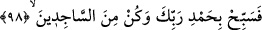

Allah, bir kimsenin ayıbını örtmek isterse
O, ayıplı kimselerin ayıbı hakkında ses çıkaramaz olur.
et-Te’vîlât’ta şöyle denilir: “(Seninle) alay edenlere karşı biz sana yeteriz.” o
kimseler ki, yaratılmışlara gösteriş için şeriatı tabiat mertebesinde uygularlar. Allah’ın
dîniyle alay ederek her şeyi O’nun rızâsı için yapıyormuş gözükürler, riyâkarlık ederler.
“Gerçekte, Allah onlarla alay eder de azgınlıklarında onlara fırsat verir, bu yüzden
onlar bir müddet başıboş dolaşırlar. İşte onlar, hidâyete karşılık dalâleti satın
alanlardır. Ancak onların bu ticâreti kazançlı olmamış ve kendileri de doğru yola
girememişlerdir.” (el-Bakara, 2/15-16) Çünkü “Onlar Allah ile berâber başka tanrı
edinenlerdir.” Bu tanrılar, tabîatları gereği şerîatı uygulama konusunda edindikleri
mahlûkat, hevâ ve dünyâdır.
Allah onlara yaptıkları amellerin karşılığını verdiğinde, bunları kimin için
yaptıklarını “yakında bilecekler!” Nitekim şöyle denilmiştir:
Toz-toprak açılıp da göz gözü görünce
Görürsün, altındaki at mı yoksa eşek mi
97. Onların söyledikleri şeyler yüzünden senin canının sıkıldığını andolsun
biliyoruz.
“Onların” kâfirlerin “söyledikleri şeyler” yâni, şirk, Kur’an’a saldırma, seninle ve
Kur’ân’la alay etmeye dâir sözleri “yüzünden senin canının sıkıldığını” göğsünün
daraldığını “andolsun biliyoruz.” Yâni kâfirlerin sözleri sana ağır geliyor.
Hz. Peygamber’de, onların söylediklerinden kaynaklanan bir göğüs sıkışması
bulunduğunu bildiğini kuvvetle vurgulamak için “andolsun” ifâdesi kullanılmıştır. Bir
şeyin kesin olarak bilindiğinin söylenmesindeki gâye de vaad veya tehdîdde
bulunduğunu kuvvetle vurgulamak demektir.
98. Sen şimdi Rabbini hamd ile tesbih et ve secde edenlerden ol!
“Sen şimdi” başına gelen bu göğüs sıkışması ve daralma esnâsında “Rabbini hamd
ile tesbîh et” Allah’ı överek, her türlü noksanlıktan tenzîh ve takdîs ederek O’na yönel
ve O’na sığın!
Kâşifî der ki: “Yâni Rabbine hamd ile berâber olan bir tesbîh ile tesbîh et. Yâni